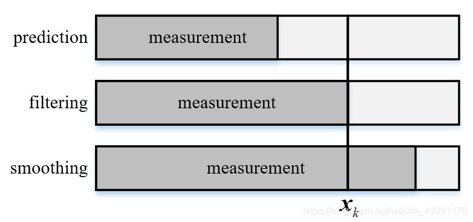
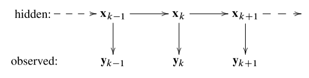

贝叶斯滤波
Table of Contents
在时移系统中通过对带有噪声的观测来估计隐状态的处理方法，滤波专门是指利用前面 k 个观测 $y_1,y_2,…,y_k$ 来估计第 k 个隐状态 $x_k$ 的方法，记作 $x_k|y_{1:k}$
如果利用前 d 个观测 (d<k) 来估计第 k 个状态，称为预报
如果利用前 d 个观测 (d>k) 来估计第 k 个状态。则称为平滑或内插
所以实际的滤波是 $d=k$ 的情形，本质上就是观测 $y_k$ 已知并且带有噪声，用它来估计未知隐状态 $x_k$

状态空间模型
对于一个可观测的系统，可以得到
$$ x_k=Ax_{k-1}+Bu_k+Gw_k\\y_k=Cx_k+v_k $$其中 $w_k,v_k$ 分别是过程噪声和观测噪声，并且上式为状态空间方程的状态方程，下式为测量方程
模型假设
由于跟踪设备获得的量测信息和我们根据控制信息得到的预测信息都不是完全准确的（否则也就没有进行估计的必要了），但其一定在真值附近的一定范围内，因此我们可以假设这两个信息服从一定的概率分布来表征二者在真值附近的不确定性。考虑的是随机动态系统，自然要用概率来刻画，所以需要一个概率状态空间模型，设定如下
- $x_k$： k 时刻的状态
- $y_k$： k 时刻的观测
- $p(x_k|x_{k-1})$：动态模型/状态转移概率
- $p(x_k|x_{k})$： 观测模型
对于这个系统，假设如下
- 一阶马尔可夫性： $p(x_k|x_{1:k-1},y_{1:k-1})=p(x_k|x_{k-1})$
- 一阶马尔可夫性： $p(x_{k-1}|x_{k:T},y_{k:T})=p(x_{k-1}|x_{k})$
- 条件独立性： $p(y_k|x_{1:k},y_{1:k})=p(y_k|x_k)$
在 k 时刻的预测信息和量测信息的本质是一个条件概率模型
$$ x_k\sim p(x_k|x_{0:k-1},y_{1:k-1})\\y_k\sim p(y_k|x_{0:k},y_{1:k-1}) $$上式为更为一般的估计模型，还要进行一定的简化。最优状态的估计的过程，实际上是根据一系列已知的观测量来估计出未知的系统状态的过程，就是概率反演过程，这种状态量隐含且按照时序排列的模型为隐马尔可夫模型（HMM）

上述的模型有两个重要性质：
-
马尔科夫性
在上述模型中，状态 $x_k$ 在给定前一时刻状态 $x_{k-1}$ 的条件下和 k-1 之前任意观测数据和状态均无关，同时和之后的状态以及测量也无关
-
观测量具有条件独立性
在给定当前状态 $x_k$ 的条件下，当前观测量 $y_k$ 和所有历史状态及观测量无关
利用这两个性质，上式可以化简为
$$ x_k\sim p(x_k|x_{k-1})\\y_k\sim p(y_k|x_k) $$得到了和之前空间状态模型基本一致，但是使用条件概率表示的模型，该模型称为概率状态空间模型
贝叶斯估计方法
在建立了概率状态空间模型之后，可以得到全状态 $X=\{x_0,...,x_k\}$ 的联合先验分布 $p(x_{0:k})$ 和所有观测量的似然 $p(y_{0:k}|x_{0:k})$ 为
$$ x_k\sim p(x_k|x_{k-1})\\y_k\sim p(y_k|x_k) $$因此对于 $0\sim k$ 时刻的所有状态量和观测量，根据贝叶斯法可以获得全状态的后验分布
$$ p(x_{0:k}|y_{1:k})=\frac{p(y_{1:k}|x_{0:k})p(x_{0:k})}{p(y_{1:k})}\propto p(y_{1:k}|x_{0:k})p(x_{0:k}) $$对于全状态 $x_{0:k}$ 来说，使得上述后验分布最大的值即为其最优估计
贝叶斯方程与推导
公式
$$ initial:p(x_0)\\prediction:p(x_k|y_{1:k-1})=\int{p(x_k|x_{k-1})p(x_{k-1}|y_{1:k-1})dx_{k-1}}\\update:p(x_k|y_{1:k})=\frac{1}{z_k}{p(x_k|x_{k})p(x_{k}|y_{1:k-1})}\\z_k=\int{p(y_k|x_k)p(x_k|y_{1:k-1})dx_k} $$推导
-
prediction
要求边缘分布，要先求联合分布，写出联合密度，根据条件概率展开即可，根据一阶马尔可夫性
$$ p(x_k,x_{k-1}|y_{1:k-1})=\frac{p(x_k,x_{k-1},y_{1:k-1})}{p(y_{1:k-1})}\\=\frac{p(x_k|x_{k-1},y_{1:k-1})p(x_{k-1},y_{1:k-1})}{p(y_{1:k-1})}\\=\frac{p(x_k|x_{k-1},y_{1:k-1})p(x_{k-1}|y_{1:k-1})p(y_{1:k-1})}{p(y_{1:k-1})}\\=p(x_k|x_{k-1},y_{1:k-1})p(x_{k-1}|y_{1:k-1})\\=p(x_k|x_{k-1})p(x_{k-1}|y_{1:k-1}) $$再对 $x_{k-1}$ 积分，可得边缘条件概率，先验概率密度
$$ p(x_k|y_{1:k-1})=\int{p(x_k|x_{k-1})p(x_{k-1}|y_{1:k-1})dx_{k-1}} $$该式子表征了贝叶斯滤波中的一步预测过程，而其离散形式是 Markov 链中经典的 CK方程
-
update
完成对于状态的一步预测之后，此时获取了 k 时刻的观测信息，那就很容易利用贝叶斯法则从已知分布 $p(x_k|y_{1:k-1})$ 和 $p(y_k|x_k)$ 求解条件分布 $p(x_k|y_{1:k})$
$$ p(x_k|y_{1:k})=\frac{p(x_k,y_{1:k})}{p(y_{1:k})} $$分子所表示的联合概率分布，根据概率链式法则
$$ p(x_k,y_{1:k})=p(y_k|x_k,y_{1:k-1})p(x_k,y_{1:k-1})\\=p(y_k|x_k,y_{1:k-1})p(x_k|y_{1:k-1})p(y_{1:k-1})\\=p(y_k|x_k)p(x_k|y_{1:k-1})p(y_{1:k-1}) $$其中化简中利用了量测独立性 $p(y_k|x_k,y_{1:k-1})=p(y_k|x_k)$。而对于分母来说，没有任何直接信息，但是可以通过对上式所表示的联合分布积分的方式来获取对应的边缘分布
$$ p(y_{1:k})=\int{p(x_k,y_{1:k})dx_k}=p(y_{1:k-1})\int{p(y_k|x_k)p(x_k|y_{1:k-1})dx_k} $$将分子分母带入最开始的公式中得到后验概率密度
$$ p(x_k|y_{1:k})=\frac{p(x_k,y_{1:k})}{p(y_{1:k})}=\frac{p(y_k|x_k)p(x_k|y_{1:k-1})p(y_{1:k-1})}{p(y_{1:k-1})\int{p(y_k|x_k)p(x_k|y_{1:k-1})dx_k}}=\frac{p(y_k|x_k)p(x_k|y_{1:k-1}))}{\int{p(y_k|x_k)p(x_k|y_{1:k-1})dx_k}} $$
总结
-
目标：实现第 k-1 步滤波到第 k 步滤波，也就是 $p(x_{k-1}|y_{1:k-1})→p(x_k|y_{1:k})$
-
初始化： $p(x_0)$
-
预测步： $p(x_{k-1}|y_{1:k-1})→p(x_k|y_{1:k-1})$
$$ p(x_k|y_{1:k-1})=\int{p(x_k|x_{k-1})p(x_{k-1}|y_{1:k-1})dx_{k-1}} $$ -
更新步： $p(x_k|y_{1:k-1})→p(x_k|y_{1:k})$，根据观测到得数据 $y_k$ 来更新数据
$$ p(x_k|y_{1:k})=\frac{1}{z_k}{p(x_k|x_{k})p(x_{k}|y_{1:k-1})dx_{k-1}}\\z_k=\int{p(y_k|x_k)p(x_k|y_{1:k-1})dx_k} $$
这就是 贝叶斯滤波，贝叶斯每次估计都需要状态预测和观测更新两步，不断循环。这个框架下可以导出 KF 和三种非线性滤波